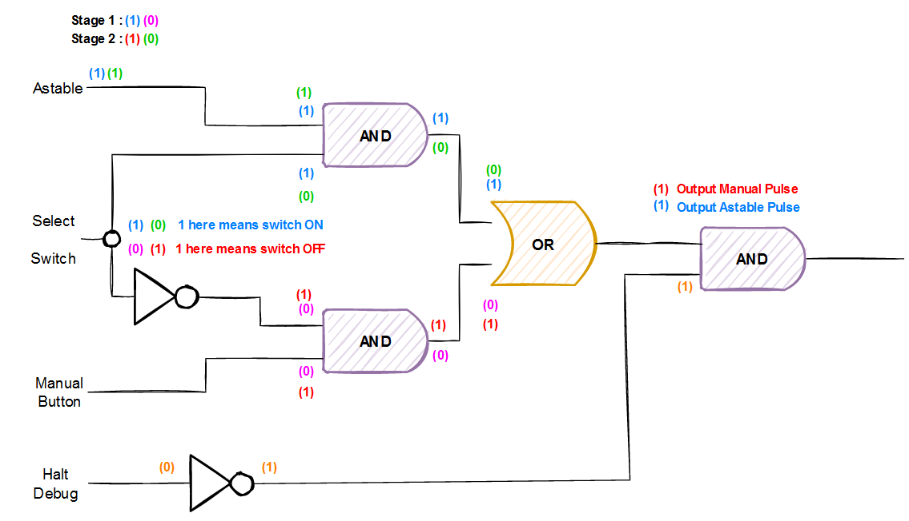
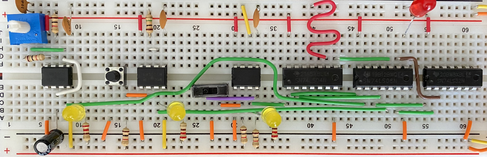

Adrien Lasalle
:date_full
#4 Clock Logic
Disclaimer: I’m following the amazing series of videos from Ben Eater using his electronic built kit for the 8 bits computer. This series of post is only there for my personnal understanding about electronic and this amazing project. I ablsolutly recommand you to watch his series of videos instead of reading this post of course ! Play-List-Link
Disclaimer 2: I’m not an expert at all, Just a beginner who wants to learn, I stay tuned for corrections or advice! Thanks !
So far
In the previous post, we were able to build 3 different mods using 3 555 Timer.
- 1 Astable clock signal: Used to provide a stable clock signal
- 2 Monostable clock signal: Used to provide a manual clock signal whenever we when 1 by 1
- 3 Bitstable clock signal: Which can be up or down as we wish.
So the next setp is to link all the mods together with logic gates.
Logic Schema
Here is the logic behind the next part. As you can see here we have 2 AND gates and 1 OR gate.
Regarding the Select Switch, we can have 2 kinds of behavior:
- Stage 1: The switch is ON so the Astable AND gate return 1 since 1 and 1 is true. The output will be Astable pulse because, on the other part, the manual AND is false, 0 and 1 is 0 or 0 and 0 is 0.
- Stage 2: The switch is OFF but the inverter return 1, so the Manual AND gate will be 1 and the output will be the Manual Pulse.

Devices requirements
Here is the list of devices we’ll use to create such a logic circuit:
- SN74LS04N contains 6 inverters
- SN74LS08N contains 4 AND gates
- SN74LS32N contains 4 OR gates
Astable Clock Logic
Here is the final part of the Astable Clock Logic.
- In RED you can see the output of the Astable going in the PIN2 of AND gate
- In GREEN you can see the output of the switch without an inverter going into the PIN1 of the same AND gate.
- The output of the AND gate is going into the OR gate.
Manual Input Clock Logic
Here is the part for the Manual input.
- In RED there is the output of the manual pulse going into the AND gate entry
- The Switch output in GREEN is going first into the inverter
- Then the inverter in BLUE is heading into the AND gate entry
- The output of the AND gate in YELLOW is heading into the OR gate
Halt And Output
Here is the HALT part and the OUTPUT of the clock module.
- First, the HALT signal is set into an inverter and then is heading to the AND gate entry
- On the other hand, the output of the OR gate (used for astable or manual) is heading into the same AND gate
- Then at the end, we have the OUTPUT of the clock module.
Final Circuit
Here is the final circuit for the Clock Module.
We’ve been able to link the astable module and the manual module into a single output with the help of a switch.
The 555 timer can be very handy with this kind of circuit!